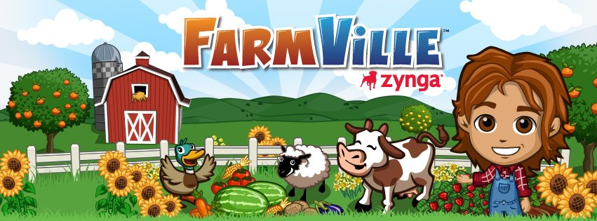
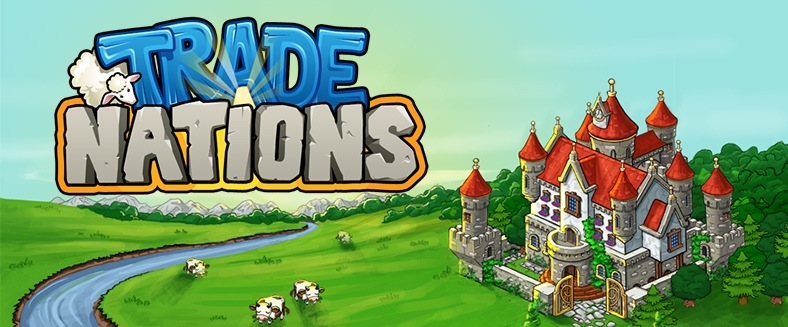
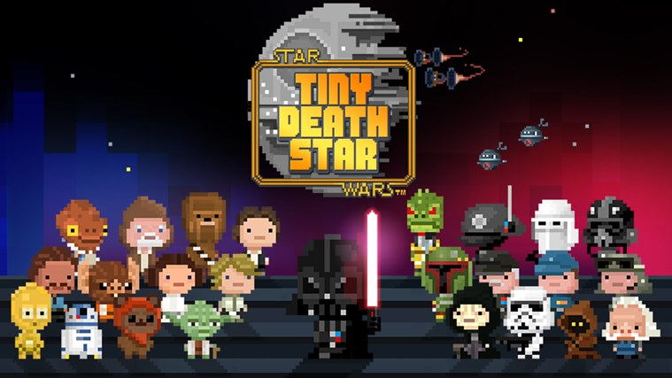

Sosyal ağlardaki beklenmedik gelişimin yaşandığı 2008 yılı yeni bir oyun çeşidinin ortaya çıkışını müjdeliyordu. Sosyal Ağ Oyunları. Öncelikli olarak sosyal ağlar üzerinden oynanmaya başlanan bu oyunlar daha sonra yaygınlaşan mobil platformlara hızla taşındı, tabi sosyal ağlardan kopmadan.
Bu tür oyunlarda ilk neslin en önemli örneğini Mafia Wars ve ülkemizde pek bilinmese de PackRat oluşturur. Bu oyunlar tamammen sosyal ağda yer alan arkadaşlarla yapılan etkinliklerle oynanmaktadır.
 Daha sonra arkadaşlara pek bağımlı olmayan, gerçek zamanlı ilerleyen ve oyundaki kaynakları tik atarak topladığımız Farmville ve türevleri geliştirilmiştir. Özellikle bu ikinci tip oyunlar, yıllardır süren klasik oyun anlayışını değiştiren, bir oyun için oturup saatlerce uğraşmak yerine, kısa aralıklarla oyunu girip, kaynakları toplamak, üretim yapmak, arkadaşlara hediye dağıtıp çıkmak şeklinde basit yapılı bir şekle bürünmüştür. Bu durum, oyun tarzının pek çok kullanıcıya hızla yayılmasını sağlayarak büyük bir pazar oluşmasına sebep olmuştur. Genelde ücretsiz olan bu oyunlarda bazı özel şeyleri üretmek ve hızlı ilerleyebilmek için gerçek para ile satın alınan –in-app purchases– olarak adlandırılan -özel paralarla- harcama yapmak gerekiyordu.
 Bu tür oyunlar içinde Trade Nations, Tiny Tower, Pocket Planes, Pocket Trains, Tiny Death Star özellikle belli bir zaman ve bazılarında -para- harcadığım oyunlar arasında yer almakatdır.
 Normalde işim olmadığında cep telefonu ile gereksiz yere oynayan biri olmamama karşın, -hatta çevremdeki insanlara baktığımda sürekli telefonları ile oynuyor olmaları tuhafıma gider.- bu sosyal ağ oyunlarını oynadığım zamanlarda telefonu daha fazla elime alır oluyorum.
Bugünlerde SimCity BuildIt oynuyorum. Oyunun çıkışı bir yıl öncesine dayanıyor ancak ben yeni kurcalamaya başladım. Gerçek anlamda sosyal ağınıza eskisi kadar bağlı kalınmayan yeni nesil bir oyun bu. Tamam arkadaşlarınızın şehirlerine bakabiliyor, satışa koydukları ürünleri satın alabiliyorsunuz ancak bu Farmville gibi sosyal ağ oyunlarından pek çok kişiyi soğutan rahatsızlık veren bildirimlere ve başka etkileşimlere sebep olmuyor. Kimin şehrinize baktığı ve ne yaptığı hakkında pek fazla bilgi paylaşılmıyor. Genel anlamda -yalnız başınıza- bir sosyal ağ oyunu oynuyorsunuz.
Oyunun 3D grafikleri SimCity 2000 ile başlayan göz alıcı detaylarla donatılmış grafik kalitesine ve mobil işlemcilere yönelik son teknolojiler kullanılarak programlanmış olduğundan performans çok çok iyi.
Oyunu kendi kendime bir challange yaratarak oynuyorum. Hiç gerçek para kullanmadan, sadece oyundaki imkanları kullanarak ilerlemeye çalışıyorum. Şimdilik sıkılmadan sakin ve yavaş bir şekilde ilerliyorum. Şehirde yeni yerleşim alanları açmadan para kazanabilmek oldukça güç ve şehri geliştirdikçe yaşayanların ihtiyaçları arttığından bazen ciddi anlamda ekonomik darboğaz içinde kalınıyor.
Oyunu oynarken bir acı gerçekle de yüzleşmek mümkün. İnsanlar sadece zaruri ihtiyaçları karşılandığında bile gayet mutlu yaşayabiliyorlar. Halen eğitime hiç yatırım yapılmamış bir şehrim var, bol bol alışveriş merkezi, polis ve klinik ile mutlu mesut yaşıyor insanlar. Ne demişler, “Cahillik mutluluktur.”